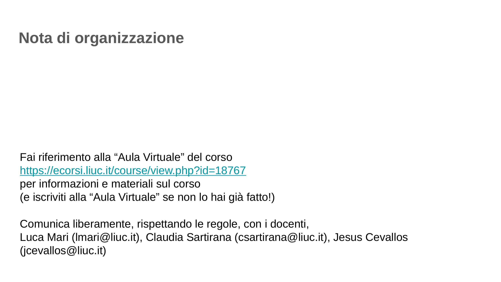
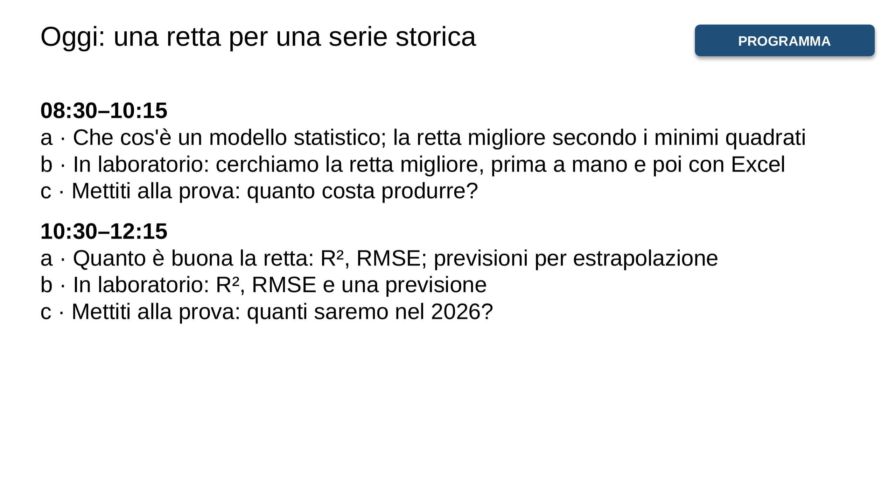
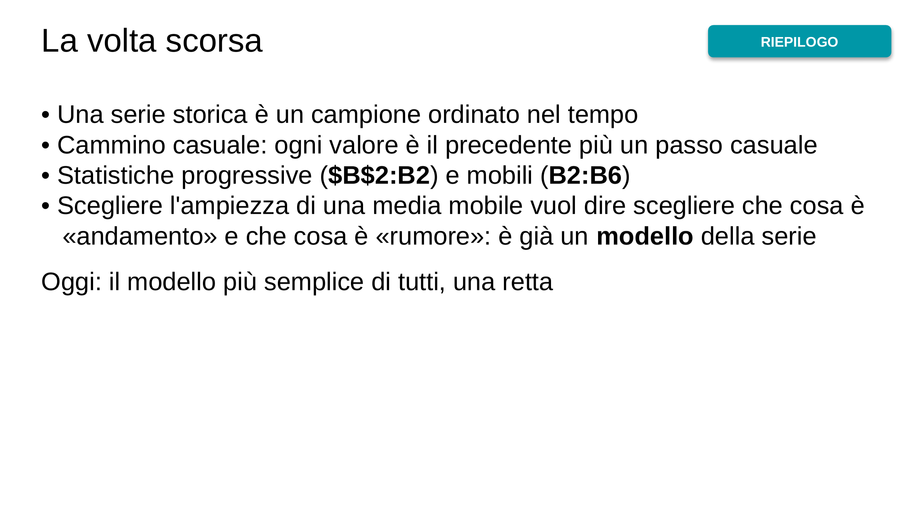
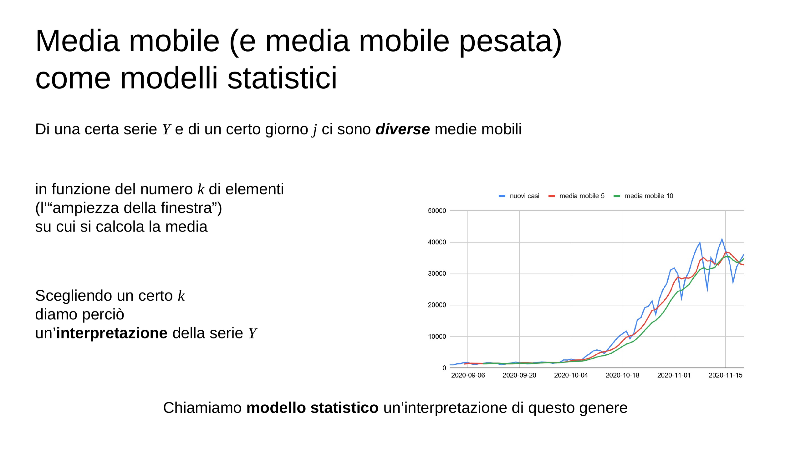
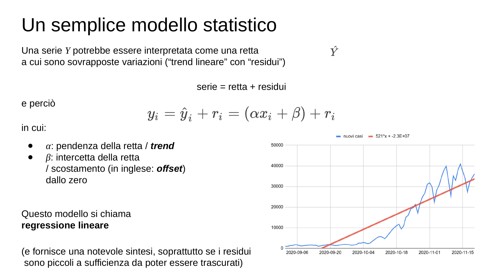
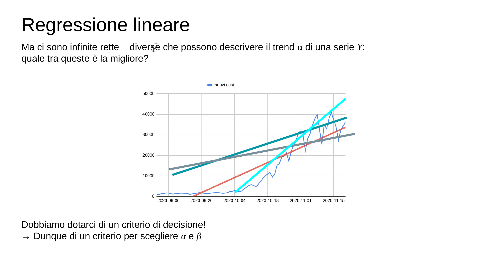
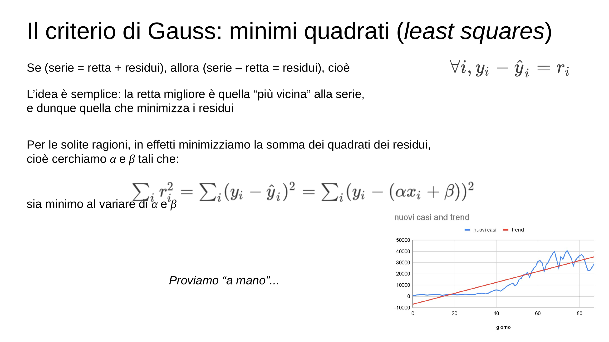
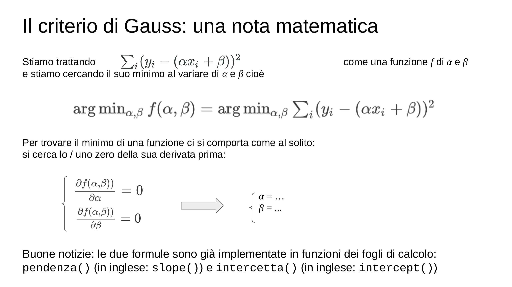
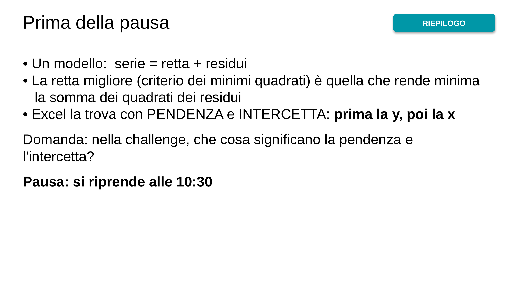
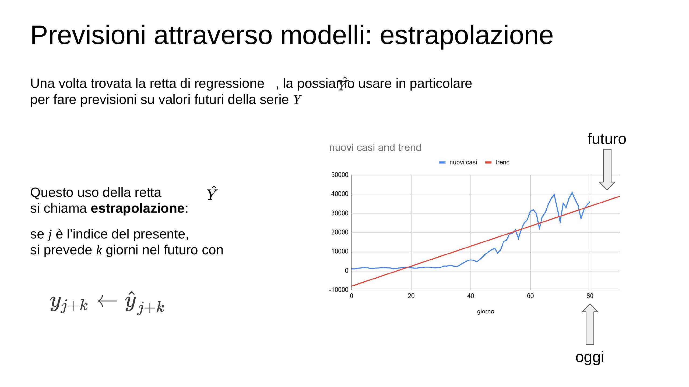
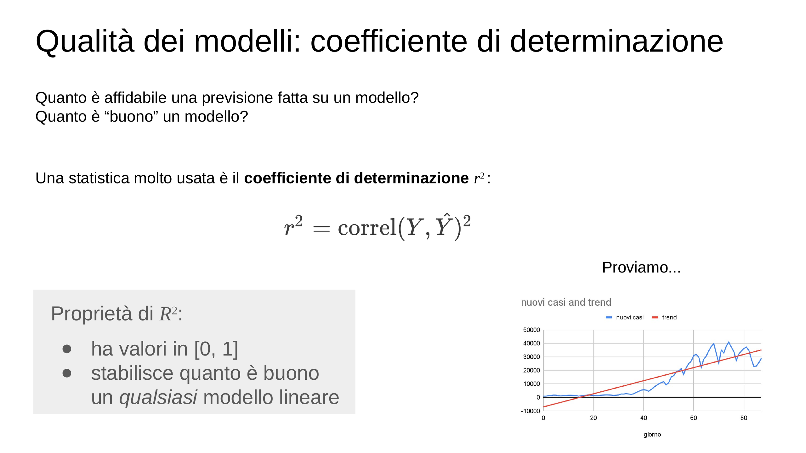
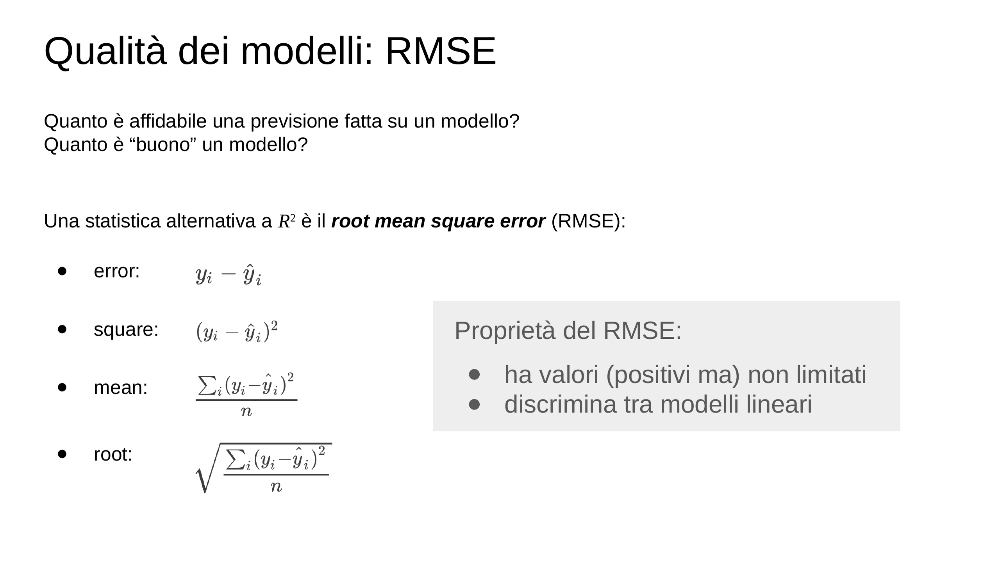
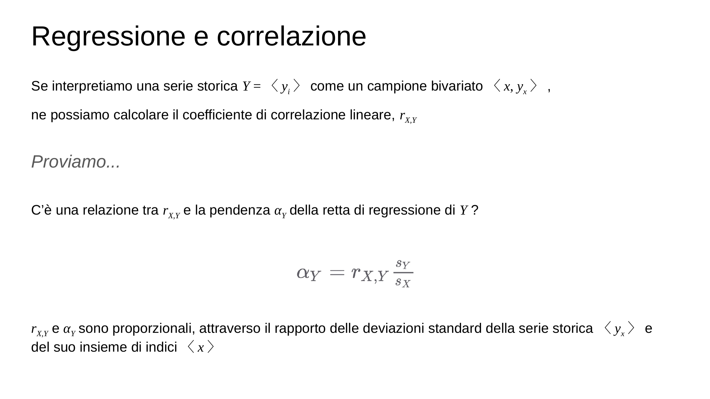
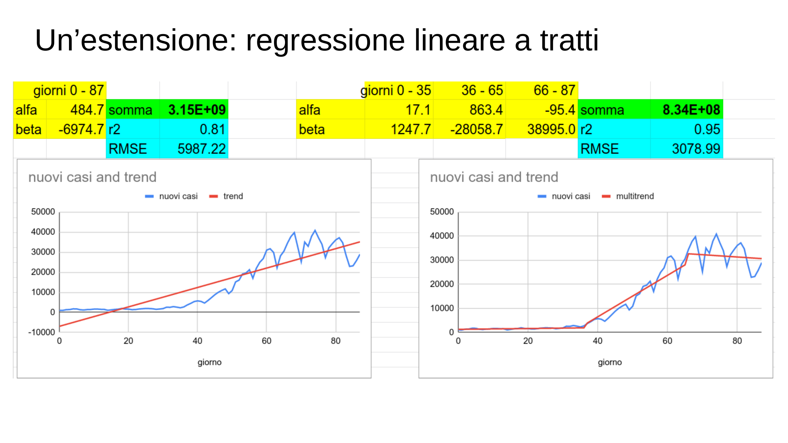
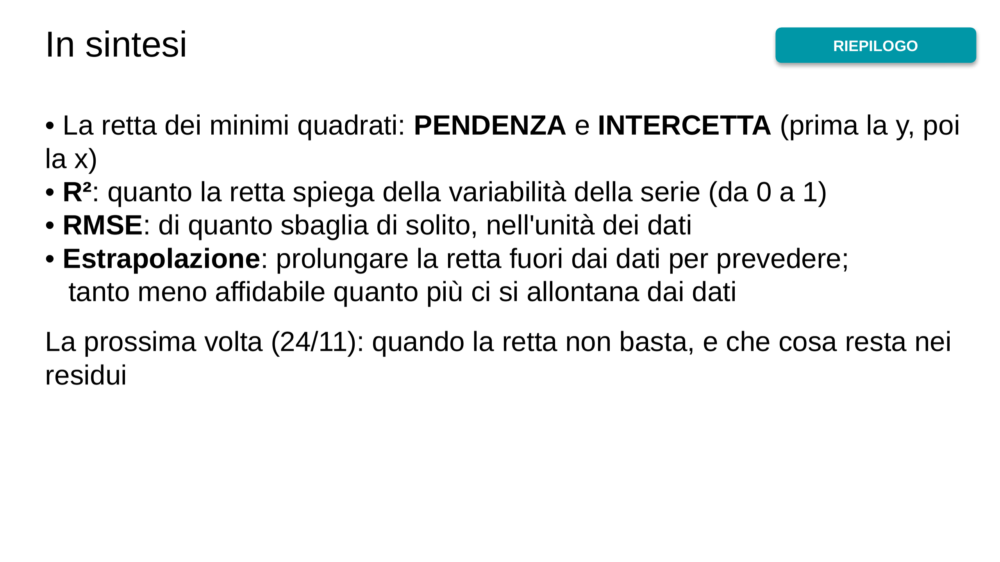
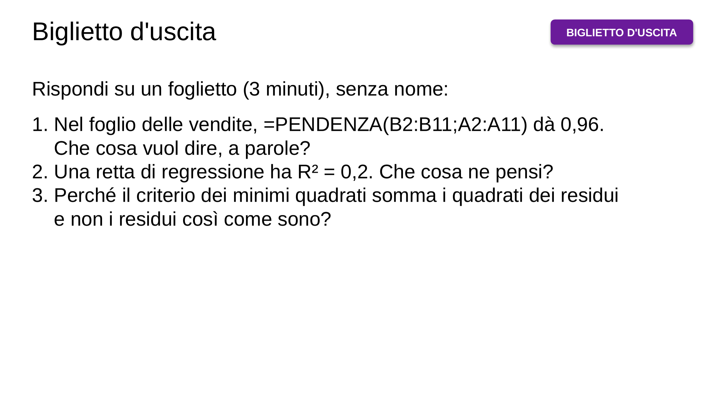
![Qualche suggerimento: – consulta l’“Aula Virtuale” su ecorsi – usa il materiale didattico, e non solo i tuoi appunti – frequenta le lezioni, e fallo in modo attivo, anche nella parte “laboratoriale” – lavora in modo costante – confrontati regolarmente con qualche compagna/o – cerca di capire e di imparare a risolvere problemi, non di memorizzare · (vedi il materiale didattico, capitolo 4. Analisi di serie storiche) (e puoi valutare le tue conoscenze e competenze a partire dagli esempi di problemi proposti)](img/03-1f7ca589cc.webp)
![Il criterio di Gauss e il machine learning · Con l’obiettivo di trovare i valori di α e β che minimizzano la funzione di errore · possiamo anche: 1. scegliere dei valori iniziali per α e β in modo casuale 2. calcolare il gradiente di f, cioè le due derivate parziali e , che indicano la direzione in cui f cresce più rapidamente, così che e indicano la direzione in cui far diminuire f 3. assegnare e dove la costante k, chiamata “learning rate”, controlla la velocità di convergenza 4. ripetere dal passo 2 fino a che i valori di α e β non rimangono costanti · Questo algoritmo si chiama discesa…](img/11-03b8cd1e20.webp)
![In laboratorio: la retta migliore · LABORATORIO · Foglio nuovo. A1 settimana, B1 vendite (migliaia di €) A2:A11 le settimane 1…10; B2:B11: 3 5 4 6 8 7 9 11 10 12 Grafico a dispersione di A1:B11. Che retta disegneresti a occhio? Retta di prova: I2 (pendenza) = 1, I3 (intercetta) = 2 C2: =$I$2*A2+$I$3 D2: =B2-C2 (residuo) E2: =D2^2 fino alla riga 11 I4: =SOMMA(E2:E11) la somma dei quadrati dei residui Gara: cambia I2 e I3. Chi ottiene la somma più piccola? Poi: =PENDENZA(B2:B11;A2:A11) =INTERCETTA(B2:B11;A2:A11)](img/12-dd84a98869.webp)
![Mettiti alla prova! Quanto costa produrre? · CHALLENGE · Un'azienda ha un costo fisso di 500 € al giorno e spende 3 € per ogni pezzo; ma i costi veri oscillano a caso, di ±100 €. 1. Simula 30 giorni: pezzi prodotti 10, 20, …, 300; costo = 500 + 3 · pezzi + un numero a caso tra −100 e 100 2. Fai il grafico (pezzi in orizzontale, costo in verticale) 3. Con PENDENZA e INTERCETTA ritrova costo per pezzo e costo fisso: escono 3 e 500? 4. Premi F9 cinque volte: di quanto cambiano? 5. Porta l'oscillazione a ±500 €: che cosa succede? 6. Che cosa sono, in questo problema, la pendenza e l'intercetta?](img/13-1f04483914.webp)
![R² e RMSE: come si leggono · R² (coefficiente di determinazione): quale frazione della variabilità della serie è spiegata dalla retta. Va da 0 a 1 e non ha unità di misura. R² = 0,93: la retta spiega il 93% della variabilità; il 7% resta nei residui RMSE (root mean square error): l'errore tipico della retta, nell'unità dei dati. RMSE = 0,77 migliaia di €: la retta sbaglia di solito di circa 770 € Attenzione: R² alto vuol dire che la retta descrive bene il passato. Non garantisce che la previsione del futuro sia buona.](img/18-fb1ffa57a2.webp)
![In laboratorio: R², RMSE e una previsione · LABORATORIO · Nello stesso foglio delle vendite: I9: =RQ(B2:B11;A2:A11) il coefficiente di determinazione I10: =RADQ(MEDIA(E2:E11)) l'RMSE (la colonna E contiene già i residui al quadrato) I12: =$I$2*12+$I$3 la previsione per la settimana 12 Sul grafico: clic sui punti › + › Linea di tendenza › Altre opzioni: lineare, con equazione e R² sul grafico. Coincidono con le tue celle? Quanto ti fidi della previsione per la settimana 12? E per la settimana 100?](img/21-11b3943375.webp)
![Mettiti alla prova! Quanti saremo nel 2026? · CHALLENGE · File popolazione_italia.xlsx: la popolazione residente in Italia dal 1952 al 2014. 1. Fai il grafico (anno, popolazione) 2. Calcola pendenza, intercetta e R². Di quanti abitanti cresce l'Italia ogni anno? 3. Calcola l'RMSE: di quanto sbaglia la retta, di solito? 4. Con la retta, prevedi la popolazione del 2026 5. All'inizio del 2025 l'Italia aveva circa 59 milioni di residenti (ISTAT). La previsione è buona? Perché? 6. Che cosa vorrebbe dire l'intercetta? Ha senso?](img/22-d581b4638b.webp)